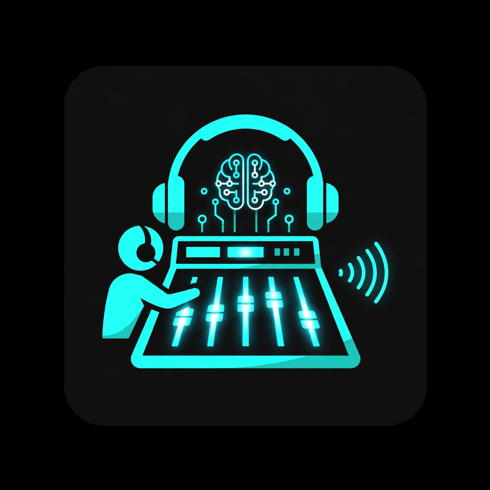

The business of AI music: how the technology is evolving and where the money actually is. Hosted by Marcus, with Devon, Maya, and Rachel.
Marcus sits down with indie artist Maya, platform builder Devon, and entertainment lawyer Rachel to dig into the craft of AI music prompting: what separates a great prompt from a garbage one, the techniques working pros actually use, and why your words are the instrument.
Marcus talks with AI platform builder Devon, indie artist Maya, and entertainment lawyer Rachel about how far AI music has come, what it really pays, and the legal fine print.
Machine Made — a Craig Moore production.